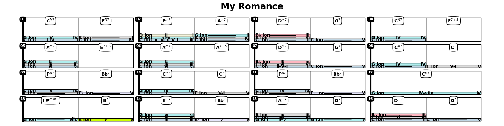
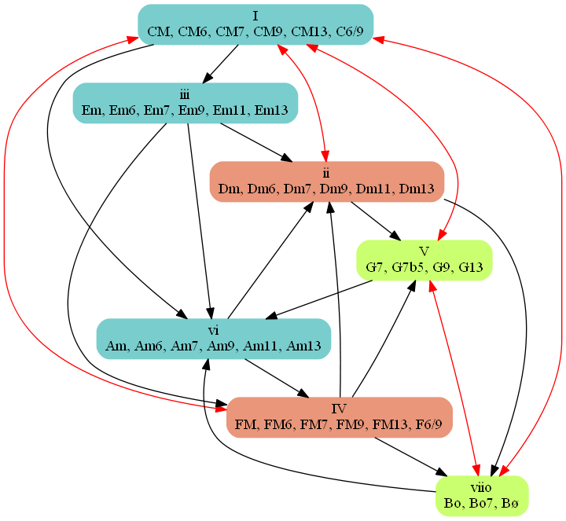
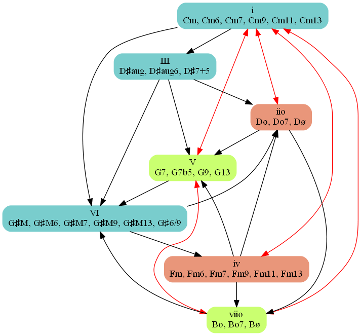
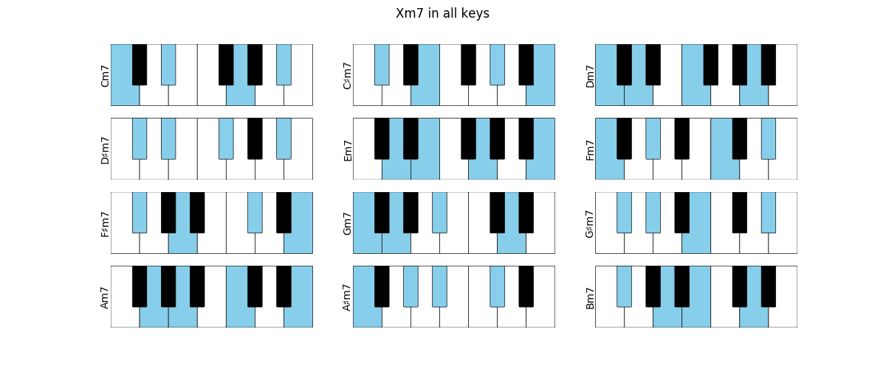
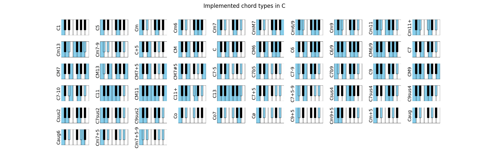

| target: | https://jazzelements.readthedocs.io/en/latest/?badge=latest |
|---|---|
| alt: | Documentation Status |
The primary goal of this package is to help in the analysis of a chord progression and facilitate learning of jazz standards. It will also suggest alternative chords, progressions, scales etc For example, we can enter a progression as a string, ask to analyse then plot the results. Each cell shows the chord, its degree in the corresponding scale, and optionally the corresponding notes. Right now we have a skeleton with the basics, working on the analysis.
Basic Examples: (https://github.com/NeuralControl/jazzTheory/blob/master/demos.ipynb) Known Progressions: (https://github.com/NeuralControl/jazzTheory/blob/master/knownProgressions.ipynb)
We can annotate a chord progression:
>>> prg = Progression('|CM7,FM7|Em7,Am7|Dm7,G7|CM7,E7#5|Am7,E7#5|Am7,A7#5|Dm7,G7|CM7,C7|FM7,Bb7|CM7,C7|FM7,Bb7|CM7|F#m7b5,B7|Em7,Bb7|Am7,D7|Dm7,G7|',name='My Romance')
>>> prg.annotate()
>>> prg.plot('fn')
- We can plot the harmonic analysis
- 
{kind=link}
or the chords (top) and scales (bottom):
>>> prg.plot('kbd')
{kind=link}
The analysis is now made using the major/minor chord progression from Tonal Harmony by Stefan Kostka
 {kind=link}
{kind=link}
Plot all Chords in a given Scale:
>>> Scale('C minor').plotChords()
{kind=link}
Plot m7 for all roots:
{kind=link}
Plot implemented chords:
{kind=link}